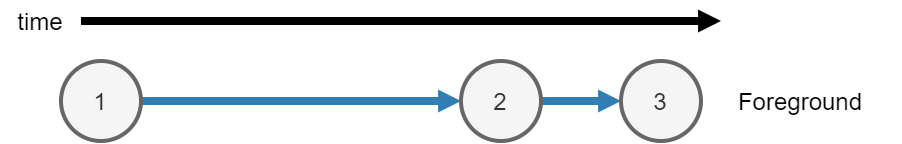
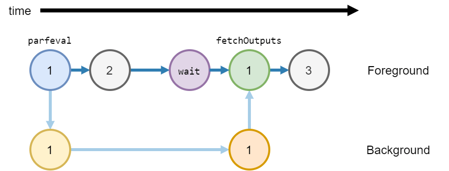

Asynchronous Functions
MATLAB® either runs code synchronously or asynchronously. You can use the following functions to run code asynchronously:
Calculate the maximum of two random matrices. MATLAB runs each line consecutively.
tic A = rand(10000); B = ones(10000); C = max(A,B); toc
Elapsed time is 0.992156 seconds.
When you run the code, MATLAB runs three calculations.
Calculate
A = rand(10000)in the foreground.Calculate
B = ones(10000)in the foreground.After creating
AandB, calculateC = max(A,B)in the foreground.

Asynchronous Code
When you run a function asynchronously, MATLAB can run other code in the foreground at the same time.
Use parfeval or parfevalOnAll to run functions
asynchronously. Use afterEach and afterAll to run
functions asynchronously after a previous function completes.
When you run a function asynchronously, MATLAB immediately returns a
Futureobject. MATLAB schedules the function to run in the background or on a parallel pool.Use
parfevalandbackgroundPoolto run code in the background.If you have Parallel Computing Toolbox™ use
parpool(Parallel Computing Toolbox) to run code on a parallel pool.If you have Parallel Computing Toolbox, you can use
parfeval(Parallel Computing Toolbox) and other functions to automatically run code on a parallel pool. For more information, see Run MATLAB Functions with Automatic Parallel Support (Parallel Computing Toolbox).
You can run other code while the function is running in the background.
Use
fetchOutputsto fetch results from theFutureobject.
| Synchronous Functions | Asynchronous Functions |
|---|---|
| MATLAB waits for the function to complete. | MATLAB does not wait for the function to complete. |
| MATLAB runs the code immediately. | MATLAB runs the code when a worker is available. For more information, see Background Workers. |
| Outputs from the function are available in the current workspace. | To copy outputs to the current workspace, use
fetchOutputs. When you use fetchOutputs,
MATLAB waits for the function to complete. |
| You can use any function or object in a synchronous function. | You can use most functions and objects in an asynchronous function.
|
| The current workspace is also available in a synchronous function. | Most of the variables in the current workspace are also available in an asynchronous function. |
Calculate the maximum of two random matrices: one created in the background, and one
created in the foreground. Matrix A is created in the background, and
matrix B is calculated in the foreground at the same time.
Note
Generally, you do not need to use wait.
fetchOutputs will implicitly wait for MATLAB to finish running the function in the background before collecting results.
The function wait is used here to explicitly show waiting for results
before collecting them.
tic fA = parfeval(backgroundPool,@rand,1,10000); B = ones(10000); wait(fA) C = max(fetchOutputs(fA),B); toc
Elapsed time is 0.534475 seconds.
When you run the code, MATLAB runs three calculations.
Calculate
A = rand(10000)in the background.Use
parfevalto schedule the functionrandto run in the background, with1output and a single input10000. Return a futurefAin the foreground.Run the function
randin the background.
Calculate
B = ones(10000)in the foreground.After creating
AandB, calculateC = max(A,B)in the foreground.Use
waitto explicitly wait for the futurefAto finish running in the background.Use
fetchOutputsto getrand(10000)from the futurefA.Calculate the final result
Cfrom matricesfetchOutputs(fA)andB.

Background Workers
When you use parfeval or parfevalOnAll to run
a function asynchronously, MATLAB runs the function on a pool.
When you use backgroundPool to run code in the background, MATLAB uses the background pool to run that code.
The background pool has a fixed number of workers. MATLAB uses these workers to run functions. Each worker can only run one function at a time. Therefore when you run multiple functions in the background, you must wait for a worker to be available to run each function.
Use the NumWorkers property of a backgroundPool to
find out how many workers you have.
If you do not have a license for Parallel Computing Toolbox, the background pool has
1worker.If you have a license for Parallel Computing Toolbox, the background pool has multiple workers. The number of workers in the background pool is the number of physical cores on your machine. For example if your machine has 4 cores, the background pool has
4workers. You can reduce this value usingmaxNumCompThreadsbefore the first usage ofbackgroundPool.